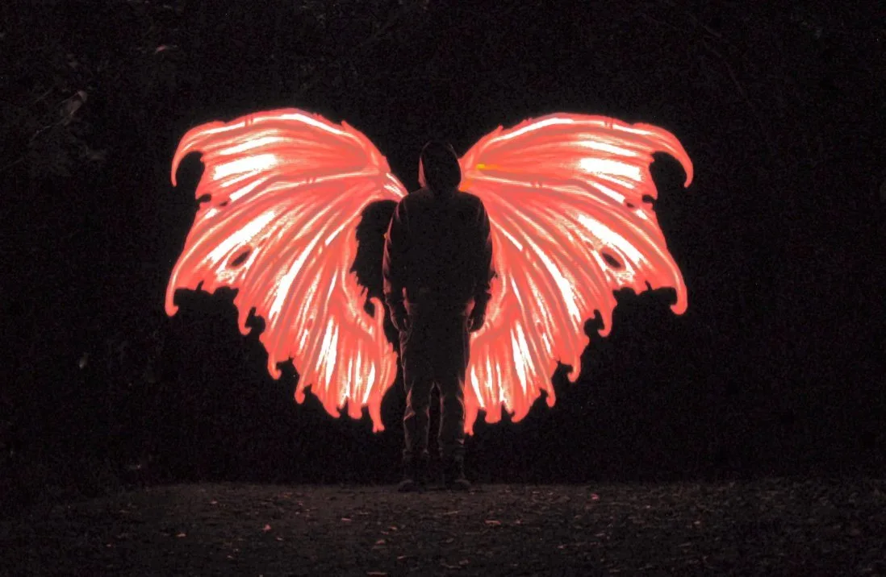
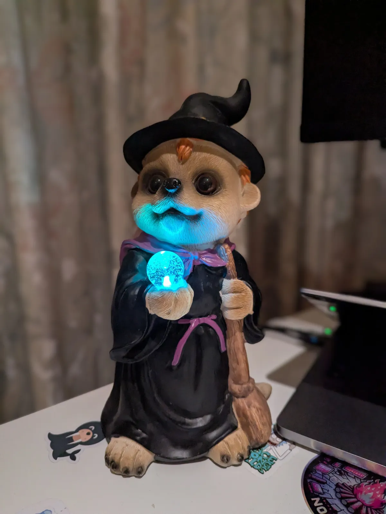
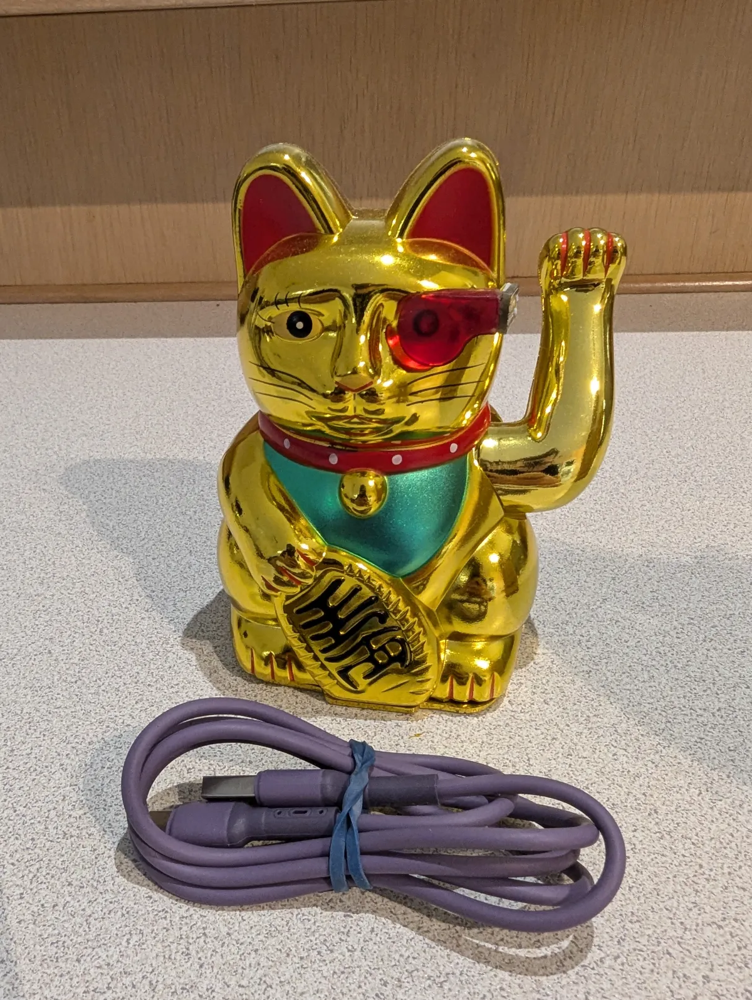
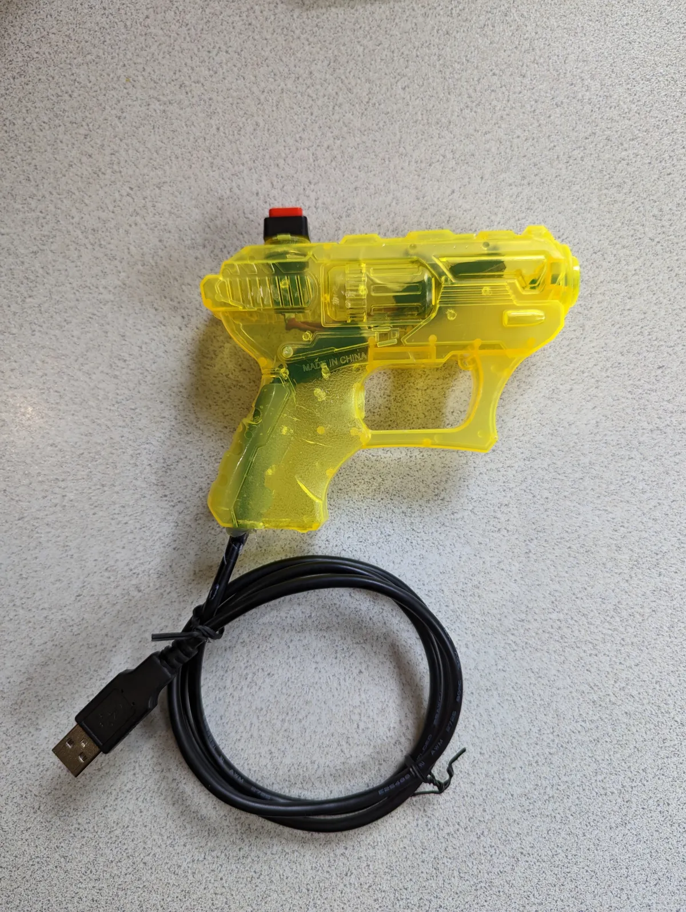
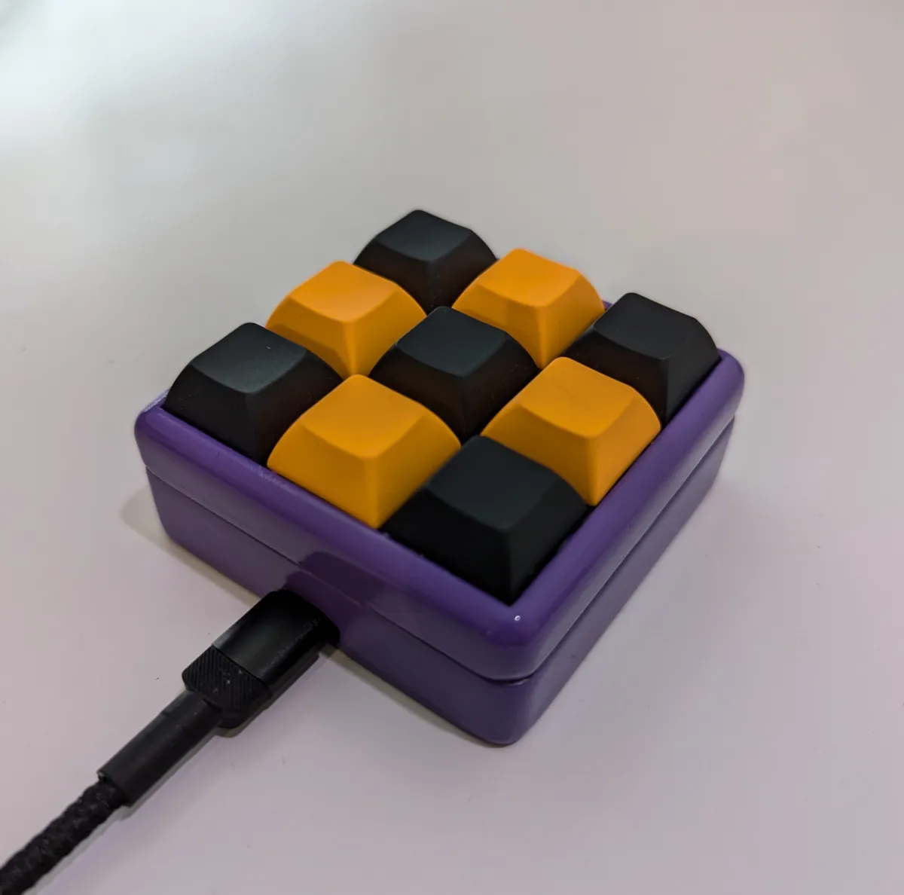

A CTF style hackable box challenge I made for Kawaiicon.
Principal Security Consultant
10+ years in cybersecurity

Roles, research, certifications, and conference talks across the years. Use the filters to focus the timeline.
A few side projects and things I've built for security conferences and for colleagues.
A CTF style hackable box challenge I made for Kawaiicon.




Gifts I've built for my colleagues.